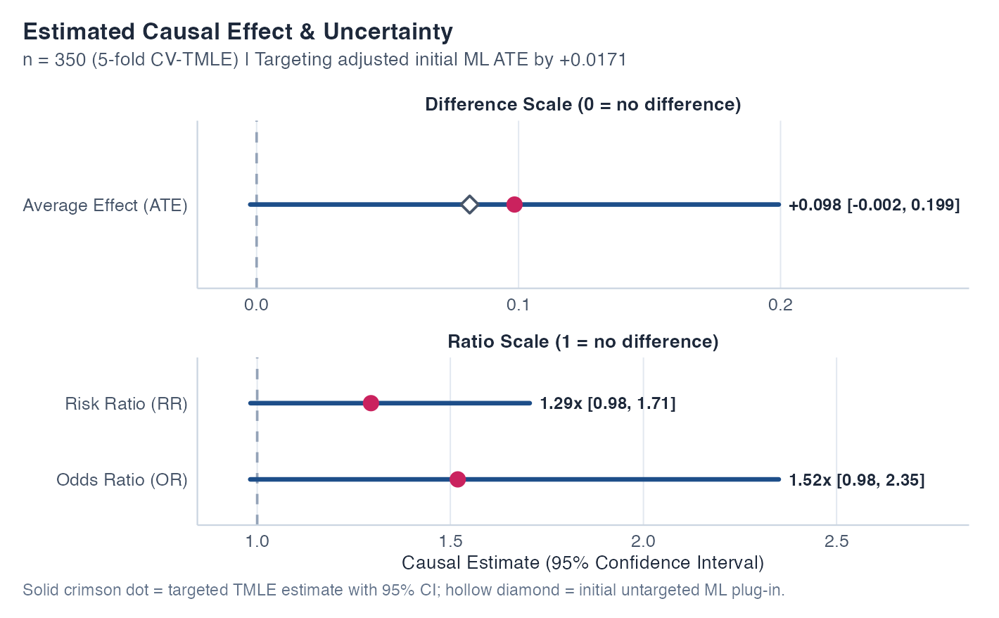
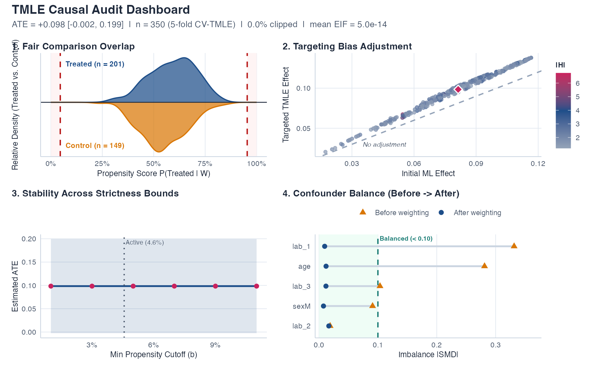

tidytmle brings cross-fitted Targeted Maximum Likelihood
Estimation (CV-TMLE) into the tidymodels ecosystem around a
clear 4-step human workflow: Question
Estimate
Audit
Paper.
If you want to understand why this two-step estimator outperforms regression alone or weighting alone, start with TMLE Intuition: A Step-by-Step Visual Guide.
Step 1 · Ask Your Question & Fit Safe Defaults
Declare which column is the outcome, which is the
treatment, and which covariates (W) you want
to adjust for using tidyselect, then call
fit(). Cross-validated Super Learning, adaptive overlap
bounds, and bounded logistic calibration turn on automatically:
library(tidytmle)
cohort <- sim_causal_cohort(n = 350, outcome_type = "binary", seed = 42)
fit <- tmle_spec(
outcome = y,
treatment = a,
covariates = c(age, sex, starts_with("lab_")),
estimand = c("ate", "rr", "or")
) |>
set_resamples(v_folds = 5L) |>
fit(data = cohort)
fit
#>
#> ── TMLE Fit Summary ──
#>
#> n = 350 (350 observed) | 5-fold CV-TMLE | logistic calibration | 1.90s
#>
#> ── Causal Effect Estimates
#> ATE est = 0.0985 (SE = 0.0515) 95% CI [-0.0024, 0.1993] p = 0.0558
#> RR est = 1.2946 (log-SE = 0.1407) 95% CI [0.9826, 1.7057] p = 0.0665
#> OR est = 1.5192 (log-SE = 0.2227) 95% CI [0.9820, 2.3505] p = 0.0603
#>
#> ── Nuisance Models (Cross-Validated Super Learner)
#> Outcome (Q): AUC = 0.714 (weights: glmnet 99%, ranger 1%)
#> Treatment (g): AUC = 0.627 (weights: glm 80%, ranger 15%, glmnet 5%)
#>
#> ── Causal Health & Bias Adjustment
#> Bias calibration (TMLE - initial ML): +0.0171 (epsilon = 0.0435)
#> ✔ All core checks healthy: mean EIF = 5.03e-14, clipped = 0.0%, top leverage = 4.3%.
#> Next: summary(fit) | check_tmle(fit) | report_tmle(fit) |
#> autoplot(fit)Visualize the causal conclusions right away with
autoplot(fit) (defaults to the forest contrast plot
type = "effect"):
autoplot(fit)
Step 2 · Read Plain-English Findings & Tidy Tables
Every tidymodels extraction verb works out of the
box—plus plain-English summaries, simultaneous confidence bands, and
sensitivity E-values:
# Plain-English causal interpretation
summary(fit)
#>
#> ── Plain-English TMLE Summary ──
#>
#> Cohort: 350 rows (350 with observed outcomes) | 5-fold cross-fitted
#> TMLE
#>
#> ── 1. What the Causal Estimates Mean
#> ℹ ATE (across the full study population): Treatment increases the expected outcome by 0.0985 units (95% CI [-0.0024, 0.1993], p = 0.0558).
#> ℹ RR: Treatment corresponds to a 1.29x risk ratio (29.5% higher risk; 95% CI [0.98, 1.71], p = 0.0665).
#> ℹ OR: Treatment corresponds to an odds ratio of 1.52 (95% CI [0.98, 2.35], p = 0.0603).
#>
#> ── 2. What the Targeting Step Did ("Predict, Then Target")
#> Targeting nudged the initial ML plug-in predictions by +0.0171
#> (epsilon = 0.0435) to zero out residual confounding bias.
#>
#> ── 3. Can I Trust These Numbers? (Health Check & Next Steps)
#> ✔ Convergence: Bias-removal score equation solved (mean EIF = 5.03e-14).
#> ✔ Comparison overlap: 0.0% clipped at [0.046, 0.954] (effective n: 191.4 treated, 135.4 control).
#> ✔ Confounder balance: Max standardized difference fell from 0.331 to 0.017 (well below 0.10).
#> ✔ Uncertainty stability: No single person dominates SEs (top observation share = 4.3%).
#> Next steps: report_tmle(fit) for paper-ready prose | autoplot(fit,
#> type = 'dashboard') for visual audit.
# Publication numbers with simultaneous bands & VanderWeele-Ding E-values
tidy(fit, simultaneous = TRUE, e_value = TRUE)
#> # A tibble: 3 × 11
#> estimand term estimate std.error statistic p.value conf.low
#> <chr> <chr> <dbl> <dbl> <dbl> <dbl> <dbl>
#> 1 ate ATE 0.0985 0.0515 1.91 0.0558 -0.00889
#> 2 rr RR 1.29 0.141 1.84 0.0665 0.965
#> 3 or OR 1.52 0.223 1.88 0.0603 0.955
#> # ℹ 4 more variables: conf.high <dbl>, e_value <dbl>,
#> # e_value_ci <dbl>, crit.value <dbl>
# Cross-validated nuisance performance & Super Learner ensemble weights
collect_metrics(fit)
#> # A tibble: 24 × 7
#> nuisance learner .metric .estimator mean n std_err
#> <chr> <chr> <chr> <chr> <dbl> <int> <dbl>
#> 1 Q SuperLearner brier_class binary 0.208 5 0.0107
#> 2 Q SuperLearner mn_log_loss binary 0.603 5 0.0254
#> 3 Q SuperLearner roc_auc binary 0.714 5 0.0341
#> 4 Q glm brier_class binary 0.209 5 0.0118
#> 5 Q glm mn_log_loss binary 0.606 5 0.0289
#> 6 Q glm roc_auc binary 0.713 5 0.0335
#> 7 Q glmnet brier_class binary 0.208 5 0.0107
#> 8 Q glmnet mn_log_loss binary 0.603 5 0.0254
#> 9 Q glmnet roc_auc binary 0.714 5 0.0347
#> 10 Q ranger brier_class binary 0.218 5 0.0113
#> # ℹ 14 more rows
extract_sl_weights(fit)
#> # A tibble: 6 × 3
#> nuisance learner weight
#> <chr> <chr> <dbl>
#> 1 Q glm 0
#> 2 Q glmnet 0.991
#> 3 Q ranger 0.00928
#> 4 g glm 0.800
#> 5 g glmnet 0.0454
#> 6 g ranger 0.154Step 3 · Audit Causal Health & Stress-Test Instantly
Run check_tmle(fit) to evaluate the 5 pillars of causal
trustworthiness (Targeting Convergence, Comparison
Overlap, Confounder Balance, Individual
Influence, and Model Learning Quality), inspect the
4-panel dashboard, and test stricter assumptions in milliseconds via
retarget():
check_tmle(fit)
#>
#> ── TMLE Causal Health Audit (5/5 Passed) ──
#>
#> ✔ Targeting Convergence (mean EIF = 5.03e-14): Bias-removal step converged cleanly (targeting shift = +0.0171, epsilon = 0.0435).
#> ✔ Comparison Overlap (Positivity) (0.0% clipped | ESS 191 vs 135): 0.0% of propensity scores hit bounds [0.046, 0.954] (ESS: treated = 191.4, control = 135.4).
#> ✔ Confounder Balance (max |SMD| 0.331 -> 0.017): Weighted confounders are well balanced (max |SMD| fell from 0.331 to 0.017, below 0.10).
#> ✔ Individual Influence (top obs = 4.3% variance): No single row dominates uncertainty (row 118 holds 4.3% of EIF variance, <= 10%).
#> ✔ Model Learning Quality (Q AUC = 0.714 | g AUC = 0.627): Cross-validated Super Learners captured real structure (Q AUC = 0.714, treatment AUC = 0.627).
#>
#> Verdict: Ready for interpretation. Generate paper prose with
#> report_tmle(fit).
if (requireNamespace("patchwork", quietly = TRUE)) {
autoplot(fit, type = "dashboard", g_grid = seq(0.01, 0.12, by = 0.02))
} else {
autoplot(fit, type = "overlap")
}
# Instant sensitivity check without ML refitting
fit_strict <- retarget(fit, g_bounds = c(0.05, 0.95))
fit_att <- retarget(fit, estimand = "att")
fit_older <- retarget(fit, subgroup = age >= 55)
dplyr::bind_rows(
dplyr::mutate(tidy(fit), scenario = "Adaptive bounds (All)"),
dplyr::mutate(tidy(fit_strict), scenario = "Strict bounds [5%, 95%]"),
dplyr::mutate(tidy(fit_att), scenario = "Among treated (ATT)"),
dplyr::mutate(tidy(fit_older), scenario = "Subgroup age >= 55")
) |>
dplyr::select(scenario, estimand, estimate, std.error, conf.low, conf.high)
#> # A tibble: 10 × 6
#> scenario estimand estimate std.error conf.low conf.high
#> <chr> <chr> <dbl> <dbl> <dbl> <dbl>
#> 1 Adaptive bounds (All) ate 0.0985 0.0515 -0.00244 0.199
#> 2 Adaptive bounds (All) rr 1.29 0.141 0.983 1.71
#> 3 Adaptive bounds (All) or 1.52 0.223 0.982 2.35
#> 4 Strict bounds [5%, 9… ate 0.0985 0.0515 -0.00244 0.199
#> 5 Strict bounds [5%, 9… rr 1.29 0.141 0.983 1.71
#> 6 Strict bounds [5%, 9… or 1.52 0.223 0.982 2.35
#> 7 Among treated (ATT) att 0.104 0.0542 -0.00180 0.211
#> 8 Subgroup age >= 55 ate 0.188 0.0804 0.0302 0.345
#> 9 Subgroup age >= 55 rr 1.48 0.185 1.03 2.13
#> 10 Subgroup age >= 55 or 2.14 0.335 1.11 4.13Step 4 · Generate Paper- & Blog-Ready Prose
Use report_tmle() to draft complete
Methods, Results, and Causal
Assumptions paragraphs automatically populated from the exact
models, bounds, and diagnostics in your fit
(style = "paper", "plain", or
"markdown"):
report_tmle(
fit,
outcome_label = "clinical recovery",
treatment_label = "targeted therapy",
style = "paper"
)
#>
#> ── Publication-Ready TMLE Report (paper style) ──
#>
#> ── Methods
#> We estimated the causal effect of targeted therapy on clinical
#> recovery among n = 350 observations (350 observed) adjusting for 5
#> baseline covariates (age, sex, lab_1, lab_2, lab_3) using 5-fold
#> cross-fitted Targeted Maximum Likelihood Estimation (CV-TMLE; van der
#> Laan & Rubin, 2006; Zheng & van der Laan, 2011). Initial conditional
#> expectations E[clinical recovery | targeted therapy, W] were fit with
#> a cross-validated Super Learner ensemble combining [glmnet (99%),
#> ranger (1%), glm (0%)]. The treatment propensity mechanism g(W) =
#> P(targeted therapy = 1 | W) was estimated with [glm (80%), ranger
#> (15%), glmnet (5%)] and bounded using adaptive sample-size-aware
#> positivity bounds [0.046, 0.954] (Petersen et al., 2012). Outcome
#> measurements were complete across all analyzed observations. Standard
#> errors and 95% confidence intervals were derived from the sample
#> variance of the Efficient Influence Function (EIF). Sensitivity to
#> potential unmeasured confounding was quantified on the risk-ratio
#> scale using VanderWeele-Ding E-values (VanderWeele & Ding, 2017).
#>
#> ── Results
#> After confounder adjustment and targeting, targeted therapy shifted
#> clinical recovery by +0.0985 units (across the full study population
#> (ATE); 95% CI [-0.0024, 0.1993], p = 0.0558; E-value = 1.69 (CI limit
#> = 1.00)); and the relative risk ratio (RR) was 1.29 (29.5% higher
#> risk; 95% CI [0.98, 1.71], p = 0.0665; E-value = 1.91 (CI limit =
#> 1.00)); and the odds ratio (OR) was 1.52 (95% CI [0.98, 2.35], p =
#> 0.0603; E-value = 2.41 (CI limit = 1.00)). The targeting calibration
#> step shifted the initial ML plug-in estimate by +0.0171 (fluctuation
#> epsilon = 0.0435) and satisfied the EIF score equation (mean EIF =
#> 5.03e-14). Inverse-propensity weighting reduced maximum covariate
#> standardized mean imbalance from 0.331 to 0.017. Positivity truncation
#> affected 0.0% of observations, with maximum single-observation EIF
#> variance leverage of 4.3%.
#>
#> ── Causal Assumptions & Diagnostics
#> 1. **No unmeasured confounding:** Valid causal interpretation assumes
#> all joint causes of targeted therapy and clinical recovery are
#> captured in W. For the primary estimand (ATE), an unmeasured
#> confounder would need a risk-ratio association of at least 1.69 with
#> both treatment and outcome (beyond measured covariates) to explain
#> away the point estimate.
#> 2. **Positivity (real-world overlap):** Only 0.0% of observations hit
#> bounds [0.046, 0.954] (effective sample sizes: treated = 191.4,
#> control = 135.4).
#> 3. **Consistency & interference:** Each unit's observed outcome
#> matches its potential outcome under the received targeted therapy
#> level without cross-unit spillover.
#>
#> Tip: Use as.character(report) or style = 'markdown' to copy directly
#> into Quarto/R Markdown.